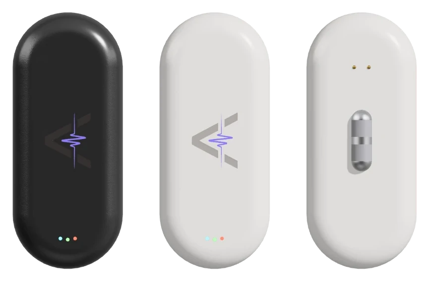
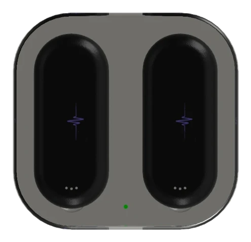

Muscles speak in electricity.
Every contraction starts with a tiny electrical signal. Actus sensors read it: which muscle fires, and how hard.
 Fatigue Detection
Fatigue Detection Automatic Rep Count
Automatic Rep Count ECG
ECG Calorie Burn
Calorie BurnActus senses your muscles and movements.
Every contraction starts with a tiny electrical signal. Actus sensors read it: which muscle fires, and how hard.
Actus accelerometer and gyroscope track every tilt, turn and change of speed, so it knows how you move.
Real-time and post-workout analysis tracks your effort, form and progress, and shows you exactly where to push next.

Track up to 8 muscles

Up to 6 workouts on a full charge
Everything Actus, working together.
AI turns a flood of data into simple advice. Actus Coach talks you through every set and sums up every workout.
Actus Intelligence pairs our own models, which read your muscles and movement and decide what you need next, with large language models that put it into plain words, for anyone, in any language.


Join the waitlist for launch news and early access, or drop us a note.